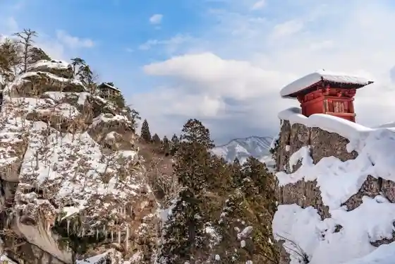
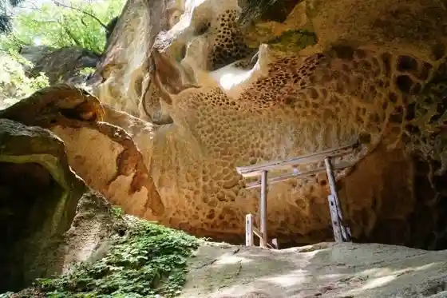
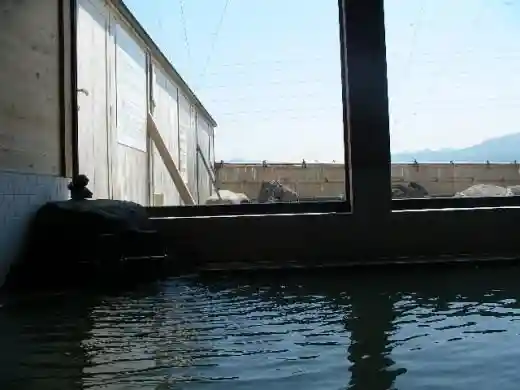
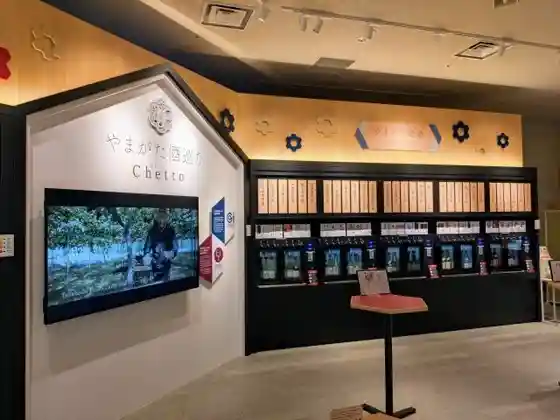

Zao Onsen
Yamagatashi, Yamagata · 023-694-9328 · Official / source link
Yamadera Hoshuyama Risshakuji
Yamagatashi, Yamagata · Official / source link

Tarumi Iseki / Mine no Ura
Yamagatashi, Yamagata · Official / source link

Domeki Onsen
Yamagatashi, Yamagata · 023-645-9033 · Official / source link

Yamagata Sake Meguri Chetto
Yamagatashi, Yamagata · 023-647-2333 · Official / source link

Yamagatashi Castle Ruins Kasumi Shiro Park
Yamagatashi, Yamagata · Official / source link
Zao Renpo (Zao Yama)
Yamagatashi, Yamagata · Official / source link
Yamagatashi Ken Kyodo Kan (Bunsho Kan)
Yamagatashi, Yamagata · 023-635-5500 · Official / source link
Zao Ropuei
Yamagatashi, Yamagata · 023-694-9518 · Official / source link
Yamagatashi Eki
Yamagatashi, Yamagata · Official / source link
Mizu no Town Ya Nanoka Town Goten Seki
Yamagatashi, Yamagata · 023-623-0466 · Official / source link
Zao no Juhyo
Yamagatashi, Yamagata · Official / source link
Dokko Numa
Yamagatashi, Yamagata · 023-694-9328 · Official / source link
Hase Do Castle Ruins Park
Yamagatashi, Yamagata · Official / source link
Omoshiroyama Highlands
Yamagatashi, Yamagata · 023-641-1212 · Official / source link
Momiji Park
Yamagatashi, Yamagata · 023-641-1212 · Official / source link
Gutto Yamagatashi Yamagatashi Ken Kanko Bussan Hall
Yamagatashi, Yamagata · 023-688-5500 · Official / source link
Zaonsen Dai Rotemburo
Yamagatashi, Yamagata · 023-694-9417 · Official / source link
Ramen no Seichi, Yamagatashi
Yamagatashi, Yamagata · Official / source link
Omoshiroyama Koyo Kawa Gorge
Yamagatashi, Yamagata · 023-641-1212 · Official / source link
Numaki Onsen Tsujigahana
Yamagatashi, Yamagata · 023-646-2410 · Official / source link
Yamagatashi Uwa no Onsen Tenjin no Yu
Yamagatashi, Yamagata · 023-688-5837 · Official / source link
Zaonsen Kyodo Bath
Yamagatashi, Yamagata · 023-694-9328 · Official / source link
Zaonsen Tourism Association Information Center
Yamagatashi, Yamagata · 023-694-9328 · Official / source link
Yamagatashi Ken Sogo Bunka Geijutsu Kan
Yamagatashi, Yamagata · 023-664-2220 · Official / source link
Roadside Station (Yamagata Zao)
Yamagatashi, Yamagata · Official / source link
Yamagatashi Marugoto Kan Kurenai no Kura
Yamagatashi, Yamagata · 023-679-5101 · Official / source link
Zao Chuo Ropuei
Yamagatashi, Yamagata · 023-694-9168 · Official / source link
Roadside Station (Yamagata Zao) Imoni Plaza
Yamagatashi, Yamagata · 023-676-6868 · Official / source link
Kasumi Shiro Sentoraru
Yamagatashi, Yamagata · 023-646-7272 · Official / source link
Juhyo Raitoappu
Yamagatashi, Yamagata · 023-694-9518 · Official / source link
Yamadera Eki
Yamagatashi, Yamagata · Official / source link
Zaonsen Ski Area
Yamagatashi, Yamagata · 023-694-9617 · Official / source link
Naitokuruza Go De Iku Juhyo Genso Kairo Tour
Yamagatashi, Yamagata · 023-694-9518 · Official / source link
Yamagatashi Kyodo Kan
Yamagatashi, Yamagata · Official / source link
Yamagatashi Prefectural Museum
Yamagatashi, Yamagata · 023-645-1111 · Official / source link
Yamadera Basho Memorial Museum
Yamagatashi, Yamagata · 023-695-2221 · Official / source link
Yamadera Gyararia
Yamagatashi, Yamagata · Official / source link
Kasumiga Onsen
Yamagatashi, Yamagata · 023-645-9234 · Official / source link
Nishizao Park Viewpoint Plaza
Yamagatashi, Yamagata · Official / source link
Karamatsu Yama Gokokuji (Soto Shu) / Saijo Sanju San Kannon Dai 5 Ban Karamatsu Kannon
Yamagatashi, Yamagata · Official / source link
Fudo Taki (Yamagatashi)
Yamagatashi, Yamagata · Official / source link
Yamagatashi Eki Tourist Information
Yamagatashi, Yamagata · 023-647-2266 · Official / source link
Kurosawa Onsen
Yamagatashi, Yamagata · Official / source link
Yamadera Tourist Information
Yamagatashi, Yamagata · 023-695-2816 · Official / source link
Yamagata Tatemono Jidai Emaki
Yamagatashi, Yamagata · 023-647-2266 · Official / source link
Yamagatashi Kotsu (Kabu)
Yamagatashi, Yamagata · Official / source link
Zao Kokutei Park
Yamagatashi, Yamagata · Official / source link
Otokoyama Shuzo
Yamagatashi, Yamagata · 023-641-0141 · Official / source link
Zao Chuo Highlands
Yamagatashi, Yamagata · Official / source link
Yamagatashi Kensan Gyo Science Museum
Yamagatashi, Yamagata · 023-647-0771 · Official / source link
Yamagatashi Sake no Museum & Yu Kemuri Yatai Tsumami
Yamagatashi, Yamagata · 023-694-9052 · Official / source link
Shoku no Eki Yamagatashi Zao Mise
Yamagatashi, Yamagata · 023-679-5700 · Official / source link
Yamagatashi Kotsu (Kabu) Yamagatashi Ekimae Information Center
Yamagatashi, Yamagata · Official / source link
Yamagatashi Ekishu Nimotsu Ichiji Azuka Ri Tokoro
Yamagatashi, Yamagata · 023-631-9522 080-2301-6682 · Official / source link
Yu no Hanacha Ya Shinzaemon Baths
Yamagatashi, Yamagata · 023-693-1212 · Official / source link
SORAMADO cafe 1387-ISAHANA
Yamagatashi, Yamagata · 023-694-9168 · Official / source link
Garyu Onsen
Yamagatashi, Yamagata · 023-631-5473 · Official / source link
Garden Kissa Nishiki
Yamagatashi, Yamagata · 023-666-3303 · Official / source link
Hoshuyama Senju In (Tendai Shu) / Saijo Sanju San Kannon Dai 2 Ban Yamadera
Yamagatashi, Yamagata · 023(695)2845 · Official / source link
Zao Sukai Ga Buru
Yamagatashi, Yamagata · 023-694-9420 · Official / source link
Ofuro café yusa
Yamagatashi, Yamagata · 0570-00-5511 · Official / source link
Umamigasaki Sakura Line
Yamagatashi, Yamagata · 023-641-1212 · Official / source link
Shutsu Shio Monju Do / Ajisai Sando
Yamagatashi, Yamagata · Official / source link
Yamagatashi Nishikoen Campground
Yamagatashi, Yamagata · 023-643-2450 · Official / source link
Yamagatashi Prefectural Museum Bunkan Kyoiku Museum
Yamagatashi, Yamagata · 023-642-4397 · Official / source link
Kurosawa Onsen Yu Yu no Sato Yusa
Yamagatashi, Yamagata · 0570-00-5511 · Official / source link
Yamagatashi Komyuniteisaikuru (Beni Chari)
Yamagatashi, Yamagata · Official / source link
Yamagatashi Art Museum
Yamagatashi, Yamagata · 023-622-3090 · Official / source link
Genshichi Roten Baths
Yamagatashi, Yamagata · 023-693-0268 · Official / source link
Yamagatashi Kankoannai Center
Yamagatashi, Yamagata · 023-647-2266 · Official / source link
Happyaku Bo Onsen
Yamagatashi, Yamagata · 023-624-9800 · Official / source link
Murayama Chiiki no Saikurutsurizumu
Yamagatashi, Yamagata · Official / source link
Shiberu Fakutorii Park
Yamagatashi, Yamagata · Official / source link
Yamagatashi Go Seki
Yamagatashi, Yamagata · 023-641-1212 · Official / source link
Pearinguwakushoppu
Yamagatashi, Yamagata · 023-673-9377 · Official / source link
Kitsune Ichijun Ri Saikuringurodo
Yamagatashi, Yamagata · Official / source link
Shichi Migi E Mon Kama (Taira Shimizu Yaki Togei Experience)
Yamagatashi, Yamagata · 023-642-7777 · Official / source link
Esuparu Yamagatashi
Yamagatashi, Yamagata · 023-628-1106 · Official / source link
Mogamiyoshimitsu Rekishikan
Yamagatashi, Yamagata · 023-625-7101 · Official / source link
Sakae Kyokudo
Yamagatashi, Yamagata · 023-622-2134 · Official / source link
Naka Sakurada Onsen
Yamagatashi, Yamagata · 023-631-1555 · Official / source link
Su no Ko Baths
Yamagatashi, Yamagata · 023-694-9007 · Official / source link
Fujika Falls
Yamagatashi, Yamagata · 023-641-1212 · Official / source link
SLOW JAM Surojamu
Yamagatashi, Yamagata · 023-687-1320 · Official / source link
Yamagatashi Kotsu (Kabu) Basu Annai Center
Yamagatashi, Yamagata · Official / source link
Soba Kaido Yamagata
Yamagatashi, Yamagata · 023-632-5246 · Official / source link
Zaonsen Yu Meguri Pasu
Yamagatashi, Yamagata · 080-3190-0019 · Official / source link
Zao Taiken Gen
Yamagatashi, Yamagata · Official / source link
Yamagatashi Yasoen
Yamagatashi, Yamagata · 023-634-4120 · Official / source link
Shinfuku Yama Ishi Gyo Tera (Tendai Shu) / Saijo Sanju San Kannon Dai 7 Ban Iwanami Kannon
Yamagatashi, Yamagata · 023(641)6514 · Official / source link
Supasuraida Peintoboru
Yamagatashi, Yamagata · 023-694-9417 · Official / source link
Zao no Tozan Torekkingu
Yamagatashi, Yamagata · Official / source link
Zao Terasu
Yamagatashi, Yamagata · 023-694-9518 · Official / source link
Yamagatashi Eki Tozaijiyutsuro (Apika)
Yamagatashi, Yamagata · Official / source link
Hiyashi Ramen
Yamagatashi, Yamagata · 023-623-0766 · Official / source link
Yamagatashi Ken Geibun Art Museum
Yamagatashi, Yamagata · 023-615-6860 · Official / source link
Yamagin Kenmin Horu Ibento Plaza
Yamagatashi, Yamagata · 023-664-2220 · Official / source link
Haseyama Nagamitsu In (Shingonshu) / Saijo Sanju San Kannon Dai 12 Ban Hase Do Kannon
Yamagatashi, Yamagata · 023(688)5901 · Official / source link
Zaonsen Shieasaikuru
Yamagatashi, Yamagata · Official / source link
Zao Miharashi no Oka Museum Park
Yamagatashi, Yamagata · Official / source link
Kokudo Kotsu Sho Moderuruto (Yamagata Zao Hirukuraimuruto)
Yamagatashi, Yamagata · 023-621-8197 · Official / source link
N-GATE NANOKAMACHI
Yamagatashi, Yamagata · Official / source link
Benibana Some Experience
Yamagatashi, Yamagata · 023-625-7736 · Official / source link
Nishizao Park
Yamagatashi, Yamagata · Official / source link
Machi Nakayaoya
Yamagatashi, Yamagata · 023-666-3955 · Official / source link
Sakurambo Saikuringurodo
Yamagatashi, Yamagata · Official / source link
Kinuito Falls
Yamagatashi, Yamagata · 023-641-1212 · Official / source link
Daiji Yama Enno Tera (Shingonshu) / Saijo Sanju San Kannon Dai 4 Ban Enno Tera Kannon
Yamagatashi, Yamagata · 023(622)3937 · Official / source link
Su Kawa Onsen Shrine
Yamagatashi, Yamagata · Official / source link
Shippo Kobo Kujaku (Shippoyaki Ki Seisaku Experience)
Yamagatashi, Yamagata · 023-622-2862 · Official / source link
no Shi Umemoto Ho Sato Ya
Yamagatashi, Yamagata · 023-622-3108 · Official / source link
Kenmin Fureai Plaza
Yamagatashi, Yamagata · Official / source link
Shirataka Yama
Yamagatashi, Yamagata · 0238-85-2111 · Official / source link
ZAO BREWERY (Zao Buruwarii)
Yamagatashi, Yamagata · 023-666-8151 · Official / source link
Takase Kawa no Koi no Bori
Yamagatashi, Yamagata · Official / source link
Ko Ryu Mizumi Campground
Yamagatashi, Yamagata · 023-641-1212 · Official / source link
Mitake Matsuo In / Saijo Sanju San Kannon Dai 9 Ban Matsuo Yama Kannon
Yamagatashi, Yamagata · 023(688)3328 · Official / source link
Eki Tabi Konshieruju Yamagatashi
Yamagatashi, Yamagata · 023-641-3404 · Official / source link
Yamagatashi Nishi Park
Yamagatashi, Yamagata · 023-643-2450 · Official / source link
Roadside Station (Yamagata Zao) Shachuhaku Supesu
Yamagatashi, Yamagata · 023-676-6868 · Official / source link
Yamagatashi Yatai Village Hottonaru Alley
Yamagatashi, Yamagata · Official / source link
Zao Onsen Higaeri Onsen Chigatto
Yamagatashi, Yamagata · 023-694-9417 · Official / source link
Shima Iseki Park
Yamagatashi, Yamagata · 023-641-1212 · Official / source link
Dewa Meisatsu San Tera Mairi
Yamagatashi, Yamagata · 023-695-2816 · Official / source link
Yamadera no Tarumi Iseki Gaido Tsuki Hikyo Haikingu Tour
Yamagatashi, Yamagata · 023-654-6699 · Official / source link
Yamagatashi Ginko Honten Biru Koeki Teki Shisetsu
Yamagatashi, Yamagata · 023-666-8737 · Official / source link
Togei Yamadera Yaki Nagase Tobo
Yamagatashi, Yamagata · 023-695-2015 · Official / source link
Hottonaru Hiroba Park
Yamagatashi, Yamagata · Official / source link
Zaonsen _ Yu Kemuri Terasu
Yamagatashi, Yamagata · Official / source link
Roku Sawara Yama Sofuku In (Tendai Shu) / Saijo Sanju San Kannon Dai 8 Ban Roku Sawara Kannon
Yamagatashi, Yamagata · 023(631)0048 · Official / source link
Yamagata Kurieiteibushitei Center Q1
Yamagatashi, Yamagata · 023-615-8099 · Official / source link
Shimizu Yama Ko Ryu Tera (Soto Shu) / Saijo Sanju San Kannon Dai 6 Ban Taira Shimizu Kannon
Yamagatashi, Yamagata · 023(631)7570 · Official / source link
Zao Besu Center Jupia
Yamagatashi, Yamagata · 023-694-9417 · Official / source link
JA Yamagataoishisa Chokubai Tokoro Ochiai Mise
Yamagatashi, Yamagata · 023-631-2588 · Official / source link
Zao Chuo Highlands Su no Shu Muhyo Tokkingu
Yamagatashi, Yamagata · 023-694-9168 · Official / source link
Chuo Kogen Dogguran
Yamagatashi, Yamagata · 023-694-9168 · Official / source link
Zao Waka no Yado Wakamatsuya
Yamagatashi, Yamagata · 023-694-9525 · Official / source link
Zao Onsen Yu Tabi Ya Taka Yu Do
Yamagatashi, Yamagata · 080-3190-0019 · Official / source link
Hase Do Kassen Boranteiagaido no Kai
Yamagatashi, Yamagata · Official / source link
Zao Chuo Highlands Mauntembaikukosu
Yamagatashi, Yamagata · 023-694-9168 · Official / source link
Kaiun Castle Town Yamagatashi Shichifukujin
Yamagatashi, Yamagata · Official / source link
Yamadera Gaikokugo Gaido Yamaderans
Yamagatashi, Yamagata · 023-695-2816 · Official / source link
Zao Janpu Dai
Yamagatashi, Yamagata · Official / source link
Yugaku Kan
Yamagatashi, Yamagata · Official / source link
Sui Shichi
Yamagatashi, Yamagata · Official / source link
Higashisawa Genjibotaru Hogo Chi
Yamagatashi, Yamagata · Official / source link
Yamagatashi Jido Yugi Shisetsu
Yamagatashi, Yamagata · 023-674-0220 · Official / source link
Shukoku Yama Kisshoin (Tendai Shu) / Saijo Sanju San Kannon Dai 3 Ban Senju Do Kannon
Yamagatashi, Yamagata · 023(684)8026 · Official / source link
Takase Eki
Yamagatashi, Yamagata · Official / source link
Zao Sangaku Insutorakuta
Yamagatashi, Yamagata · 023-694-9328 · Official / source link
Kyu Chitose Kan Eria
Yamagatashi, Yamagata · Official / source link
Zao Kantorii Club
Yamagatashi, Yamagata · 023-688-7777 · Official / source link
JA Yamagataoishisa Chokubai Tokoro Kurenai no Kuramise
Yamagatashi, Yamagata · 023-616-8001 · Official / source link
Senta Taki
Yamagatashi, Yamagata · 023-641-1212 · Official / source link
Suzukawa Park
Yamagatashi, Yamagata · 023-641-1212 · Official / source link
Zao Ropuei Tobutetsudo 8000 Kei Sharyo Tenji
Yamagatashi, Yamagata · Official / source link
Zaonsen Jingisukan
Yamagatashi, Yamagata · Official / source link
Yamagatashi Daigaku Fuzoku Museum
Yamagatashi, Yamagata · 023-628-4930 · Official / source link
Nabekura Fudo Taki
Yamagatashi, Yamagata · Official / source link
Yamagata Maiko Yamagata Geiko
Yamagatashi, Yamagata · 023-634-0232 · Official / source link
Sosho Yamagatashi Ushi
Yamagatashi, Yamagata · 023-634-8150 · Official / source link
Yamagatashi Chiho Shinrinkumiai Chokubai Tokoro Yamakku Hausu
Yamagatashi, Yamagata · 023-645-8313 · Official / source link
LUGGAGE STATION
Yamagatashi, Yamagata · Official / source link
Seifu So
Yamagatashi, Yamagata · Official / source link
Maboroshi Ryu Falls
Yamagatashi, Yamagata · 023-641-1212 · Official / source link
Yamadera Kanko Gaido Kizahashi Kai
Yamagatashi, Yamagata · Official / source link
Gensen Ashiyu (Kutsurogi Baths)
Yamagatashi, Yamagata · Official / source link
JA Yamagataoishisa Chokubai Tokoro Minamidate Mise
Yamagatashi, Yamagata · 023-645-5001 · Official / source link
Nunobiki Falls
Yamagatashi, Yamagata · 023-641-1212 · Official / source link
Tomihiro Roman Tei (Kimono Rentaru & Kitsuke)
Yamagatashi, Yamagata · 023-631-0610 · Official / source link
Higashi Soariina & Chihitsu Do Bunko
Yamagatashi, Yamagata · 023-689-1166 · Official / source link
Suwa Shrine (Yamagatashi)
Yamagatashi, Yamagata · 023-622-6358 · Official / source link
Gu Land Art Museum
Yamagatashi, Yamagata · 023-641-2611 · Official / source link
Hatago Town Nigiwai Kyoten gura
Yamagatashi, Yamagata · 023-674-0943 · Official / source link
Zao Sandai Kami Meguri
Yamagatashi, Yamagata · Official / source link
Zao Tsuribori
Yamagatashi, Yamagata · 023-694-9202 · Official / source link
Yamagatashi Ken Midori Town Teien Bunka Gakushu Shisetsu Senshin Iori
Yamagatashi, Yamagata · 023-664-2800 · Official / source link
Yamagatashi Sangyo History Museum
Yamagatashi, Yamagata · 023-643-6031 · Official / source link
Rindo Futakuchi Sen
Yamagatashi, Yamagata · Official / source link
Yamagatashi Kanko Ogata Basu Senyo Chushajo
Yamagatashi, Yamagata · 023-641-1212 · Official / source link
0035 BY KIYOKAWAYA
Yamagatashi, Yamagata · 023-676-8111 · Official / source link
Zao Onsen Yu Tabi Ya Taka Yu Do (Kokeshiato)
Yamagatashi, Yamagata · 080-3190-0019 · Official / source link
Zao Daikoku Ten
Yamagatashi, Yamagata · Official / source link
Naomi Do
Yamagatashi, Yamagata · Official / source link
Horetsu Shrine
Yamagatashi, Yamagata · 023-642-7108 · Official / source link
Ko Hora Taki
Yamagatashi, Yamagata · 023-641-1212 · Official / source link
Yamagatashi Kokusaikoryu Plaza Yamagatashi Bigguingu
Yamagatashi, Yamagata · 023-635-3100 · Official / source link
Su no Haikusukii De Meguru BEAUTIFUL ZAO.WINTER SUPERB VIEW
Yamagatashi, Yamagata · 023-694-9417 · Official / source link
Omoshiroyama
Yamagatashi, Yamagata · Official / source link
Yamagatashi Ritsu Daiichi Shogakko Kyu Kosha
Yamagatashi, Yamagata · 023-641-1212 · Official / source link
Kurotaki (Yamagatashi)
Yamagatashi, Yamagata · 023-641-1212 · Official / source link
Arare Taki
Yamagatashi, Yamagata · 023-641-1212 · Official / source link
Yamagatashi Baji Center
Yamagatashi, Yamagata · 023-687-4885 · Official / source link
Japan'ekotorakku (Nishizao Shuyu Saikuringuruto)
Yamagatashi, Yamagata · Official / source link
Zao Dam
Yamagatashi, Yamagata · Official / source link
Zaonsen Hatchaku Sogei Tsuki ”Yamaderans” Niyoru Yamadera Eigo Gaido Tour
Yamagatashi, Yamagata · 023-694-9417 · Official / source link
Tomihiro (Chaku Ho Kitsuke Ressun)
Yamagatashi, Yamagata · 023-635-1212 · Official / source link
Kyu Yoshiike Iin
Yamagatashi, Yamagata · Official / source link
Ekopu Motosawa
Yamagatashi, Yamagata · 023-688-5773 · Official / source link
Fuse Yashichi Kyozome Mise (Chaku Mo no Gatari Yukata Rentaru (Yukata Experience))
Yamagatashi, Yamagata · 023-622-6317 · Official / source link
Nishizao Kogen Su no Paradaisu
Yamagatashi, Yamagata · 023-632-9661 · Official / source link
CQ-BASE
Yamagatashi, Yamagata · 070-2798-3155 · Official / source link
Yamagatashi Sogo Supotsu Center
Yamagatashi, Yamagata · Official / source link
Zao Sanraizu Kanko
Yamagatashi, Yamagata · 023-694-9055 · Official / source link
Yamagatashi Ken Gokoku Shrine
Yamagatashi, Yamagata · 023-631-5086 · Official / source link
Yachiyo Kanko Basu
Yamagatashi, Yamagata · 023-681-8400 · Official / source link
Shu Otori Shuzo Ba
Yamagatashi, Yamagata · 023-641-0026 · Official / source link
Narisawa Castle Ruins Park
Yamagatashi, Yamagata · Official / source link
Yamagatashi Nambu Jido Yugi Shisetsu Shierutainkurushibupureisu Koparu
Yamagatashi, Yamagata · 023-676-9876 · Official / source link
Japan'ekotorakku (14 Zao Eria (Yamagatashi Ken Miyagiken))
Yamagatashi, Yamagata · Official / source link
Umamigasaki River Park
Yamagatashi, Yamagata · 023-641-1212 · Official / source link
Zao Taka Yu Warabe Village
Yamagatashi, Yamagata · 023-693-0093 · Official / source link
MOGY
Yamagatashi, Yamagata · Official / source link
Akiba Shunko Do (Kimono Obi Wo Tsukatta Shiori Tsukuri Experience)
Yamagatashi, Yamagata · 023-622-9765 · Official / source link
0035 gather
Yamagatashi, Yamagata · 023-676-8111 · Official / source link
Al-che-cciano con cert
Yamagatashi, Yamagata · 023-616-7040 · Official / source link
Sandai Kami Ichinomiya Wo Meguru Zao Junrei Torekkingu Tour
Yamagatashi, Yamagata · Official / source link
Hyutte Yaren
Yamagatashi, Yamagata · Official / source link
Sato Yuki Miya Yudono Yama Shrine
Yamagatashi, Yamagata · 023-633-1810 · Official / source link
Kunii Makoto Umi Memorial Museum
Yamagatashi, Yamagata · 023-644-1738 · Official / source link
Yamagata Joba Club
Yamagatashi, Yamagata · 023-616-7135 · Official / source link
Yamagatashi Terusa
Yamagatashi, Yamagata · 023-646-6677 · Official / source link
Somoku Senko Bo Kame Ya
Yamagatashi, Yamagata · 023-625-7736 · Official / source link
Miyamakasumizakura
Yamagatashi, Yamagata · 023-634-4120 · Official / source link
Momberu Yamagatashi Mise
Yamagatashi, Yamagata · 023-615-1641 · Official / source link
Yamakon Shokuhin
Yamagatashi, Yamagata · Official / source link
Yamagatashi Sogo Supotsu Center Su Ga to Ba
Yamagatashi, Yamagata · 023-625-2288 · Official / source link
So Kai Tei
Yamagatashi, Yamagata · 023-644-9558 · Official / source link
Yu So no Oka
Yamagatashi, Yamagata · Official / source link
Zao Wagyu
Yamagatashi, Yamagata · 023-664-1729 · Official / source link
Den Roku
Yamagatashi, Yamagata · 0120-397-150 · Official / source link
Kenko no Mori Park
Yamagatashi, Yamagata · Official / source link
Zao Hyobaku Kengaku Su no Shutorekkingu
Yamagatashi, Yamagata · 023-644-9558 090-2258-4715 · Official / source link
Wa Tansu Museum
Yamagatashi, Yamagata · 023–688–2624 · Official / source link
Yamagatashi Umamigasaki Puru Jaba
Yamagatashi, Yamagata · 023-633-8989 · Official / source link
Taira Shimizu Yaki Seiryu Kama
Yamagatashi, Yamagata · 023-631-2828 · Official / source link
Zao Jizo Mikoto
Yamagatashi, Yamagata · Official / source link
Tamaya So Main Shop
Yamagatashi, Yamagata · 023-623-0558 · Official / source link
YAMAGATA BAR HOPPING
Yamagatashi, Yamagata · Official / source link
Gansho Shoten
Yamagatashi, Yamagata · 023-622-4781 · Official / source link
Juichi Ya
Yamagatashi, Yamagata · 023-622-0011 · Official / source link
Kineya Main Shop
Yamagatashi, Yamagata · 023-673-5444 · Official / source link
Nishizao Kogen Su no Mobirusukuru
Yamagatashi, Yamagata · 023-633-3555 · Official / source link
Tomihiro Senshoku Kogei
Yamagatashi, Yamagata · 080-5578-9259 · Official / source link
Yamagatashi Tami Hall
Yamagatashi, Yamagata · 023-642-3121 · Official / source link
Maru Judai Ya
Yamagatashi, Yamagata · 023-632-1122 · Official / source link
Choei Do
Yamagatashi, Yamagata · 023-622-5556 · Official / source link
O Kashi Tsukasa Yamada Ie
Yamagatashi, Yamagata · 023-622-6998 · Official / source link
Somoku Senko Bo Kame Ya (Benibana to Tomoni Sakae Ta Yamagatashi Saijo Benibana no Rekishi to Chiikibunka Ni Fureru)
Yamagatashi, Yamagata · 023-625-7736 · Official / source link
Kagu Kobo Moku
Yamagatashi, Yamagata · 023-688-3717 · Official / source link
Shoji Kyu Nizo Shoten
Yamagatashi, Yamagata · Official / source link
Johoku Men Ko
Yamagatashi, Yamagata · 023-643-5501 · Official / source link
Yamagatashi Serurii
Yamagatashi, Yamagata · Official / source link
Yamagatashi Terowaru
Yamagatashi, Yamagata · 023-623-5612 · Official / source link
Men Workshop Sakai
Yamagatashi, Yamagata · 023-625-5233 · Official / source link